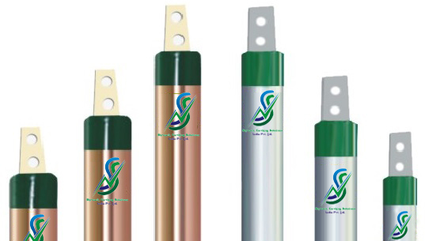
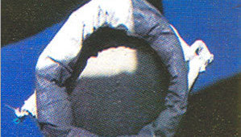
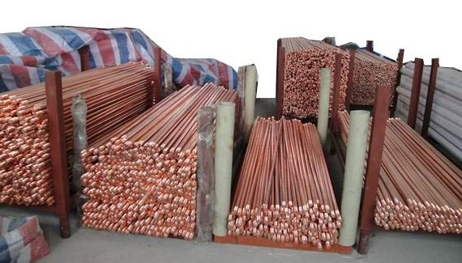
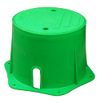
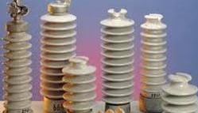
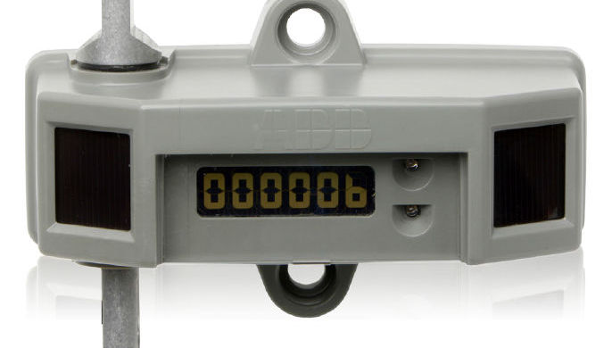
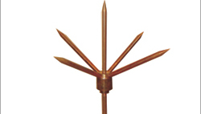
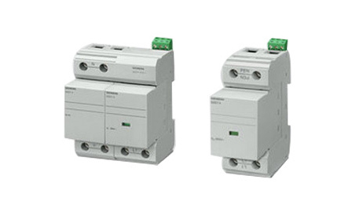

- 
SN Copper Electrodes
Each SN Earthing Electrodes creates an optimal electrical connection to earth with a large conductive surface We manufactures earthing electrode system for DG Set which provides low resistance path in ground to any fault & leakage currents and ensure the long life to the equipment against any corrosion.
- 
SN BackFill Compounds
SN BackFill Compounds,an ideal BFC has high electrical conductivity, moisture capture and retention abilities and anti corrosive properties.Earthing Backfill Compound has Hydrated Aluminium Silicate as the chief component that has a natural property of swelling and absorption.
- 
SN Copper Bonded Rods
SN Copper Earthing rod are manufactured for safe earthing in various areas and buildings.Our UL Listed Copper Bonded Grounded Rods are the economical and the best earth rods available in the market.The copper bonded steel cored rod has a variety of features that add to the performance of this earthing system by many degrees.
- 
SN FRP Pit Covers
SN's light weight earth inspection housing has a maximum safe working load of 2000 kilograms. It is UV stabilized against degradation by sunlight and non-brittle to prevent cold weather damage. We adhere to all the norms such as the prices, which are estimated in a pocket friendly manner. They are quality tested before their dispersal and have immense functional values.
- 
SN Lightning Arresterss
These arrestors are offer value to client owing to their good performance in toughest conditions. Lightening arrestors are made from best quality material such as SS that assure not only safety and an early streamer emission air terminal is designed to reduce the average statistic time associated with streamer emission of the upward leader.
- 
SN Lightning Strike Counter
Lightning strike counter is used for recording times of lightning strike of various kinds of lightning eliminators and lightning rod. It is kind of electro mechanical counter with 8 digit display facility, lightning strikes provides valuable information for the maintenance and safety of all structures and its occupants and is economical too.
- 
SN Spike Lightning Arresters
We are a renowned organization, which is engaged in offering Spike Protector to our clients. Spike Lightning Arrestor is a metal rod, made of copper and, used as part of lightning safety to protect tall or isolated structures (such as the roof of a building or the mast of a vessel) from lightning damage. Lightning is the leading cause of weather related damage to building equipments.
- 
SN Electrical Surge Protecters
Surge Protection Device is made available by us in two types namely Power Surge Protection and Signal Surge Protection. Designed for handling the toughest conditions, the Surge Protection Devices offered by us are manufactured as per international standards and tested to provide the best protection in various sensitive systems.